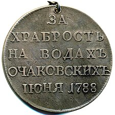
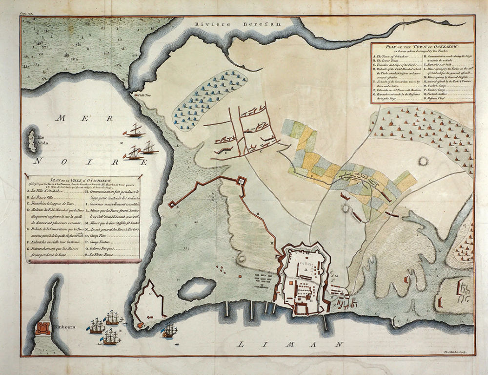
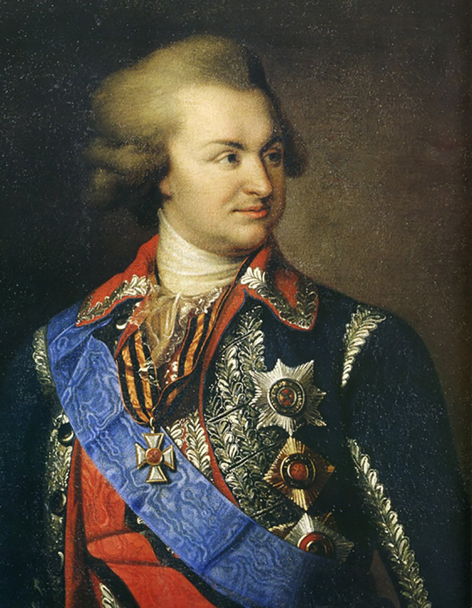
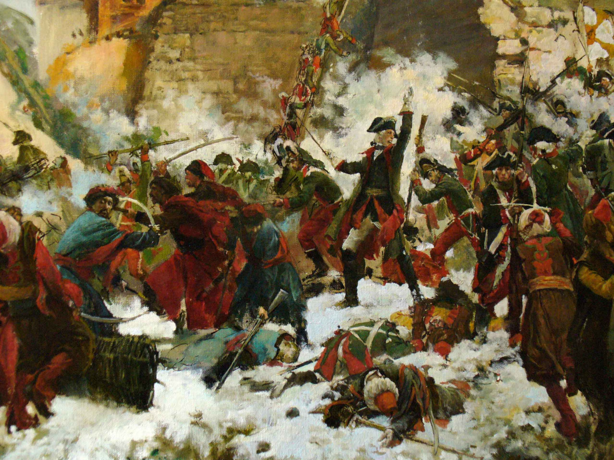
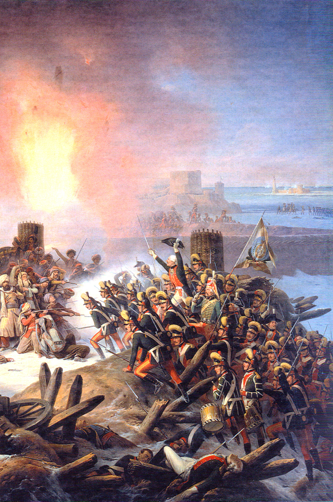
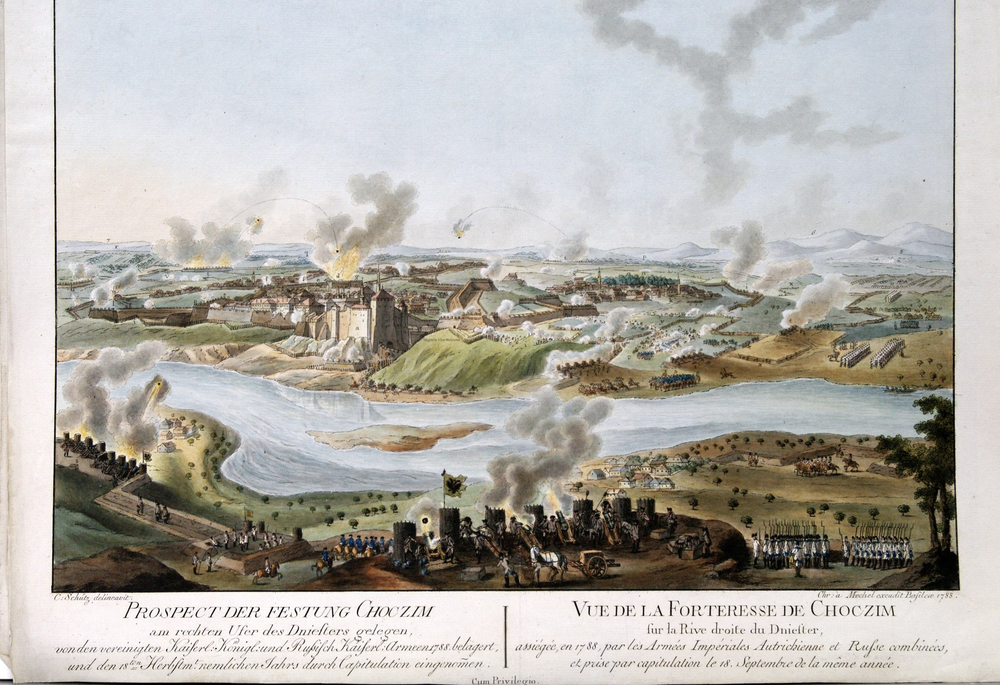
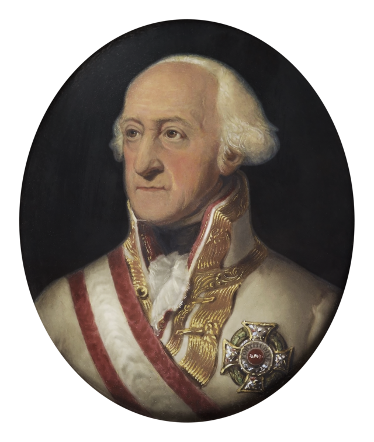

Перед войной Очаковская крепость была капитально перестроена французскими инженерами. С началом войны были возведены дополнительные земляные укрепления полевого типа. Гарнизон составлял 20 тысяч человек при 300 крепостных и 30 полевых орудий. В начале июля 1788 года российская Екатеринославская армия, 50 тысяч человек, под командованием князя Г. А. Потёмкина подошла к Очакову и приступила к его осаде. Действия осаждающих поддерживала Черноморская эскадра контр-адмирала Пола Джонса, в составе которой действовала гребная флотилия под командованием принца Нассау-Зигена. В июне ― июле 1788 года русскому флоту удалось в результате действий под Очаковым частью уничтожить, частью оттеснить турецкий флот Гассана-паши, стоявший у берега.


27 июля (7 августа) 1788 генерал-аншеф А. В. Суворов отразил турецкую вылазку из крепости, а затем захотел пойти на штурм, — чего не желал Потёмкин, приказав отступить. Суворов получил ранение, передав командование генерал-поручику Бибикову. План Потёмкина заключался в проведении методической осады: предполагалось заложить параллели и установить батареи, а затем, постоянно обстреливая крепость, выдвигать параллели и батареи, овладеть пригородами и заставить крепость капитулировать. Суворов описал данный план двустишием: "Я на камушке сижу, на Очаков я гляжу". Высказывался и генерал-фельдмаршал граф Румянцев-Задунайский: "Очаков ― не Троя, чтоб его десять лет осаждать".
В течение августа было установлено 14 батарей, с которых постоянно вёлся огонь по городу, в котором начались пожары. В сентябре осаждающие устроили ещё 10 батарей. К ноябрю Очаков обстреливали 317 орудий, установленных на 30 батареях. Турки периодически организовывали вылазки и мешали осадным работам. Между противниками проходили постоянные бои за овладение земляными ретраншементами.


В связи с приближающейся зимой Потёмкину пришлось согласиться на штурм, потому что в условиях зимней погоды пришлось бы потерять большую часть осадных войск от холода и болезней. Согласно диспозиции, составленной генерал-ашефом артиллерии И. И. Меллером, для проведения штурма было организовано шесть атакующих колонн общей численностью 14 тысяч.
В семь часов утра 6 декабря при 23-градусном морозе российские войска пошли на штурм. Колонна генерал-майора П. А. Палена прорвала турецкие укрепления между городом и замком Гассан-паши, а затем сам замок и ретраншементы. Колонна генерал-майора Волконского захватила центральные укрепления. Колонна генерал-лейтенанта князя Долгорукова прорвалась к крепостным воротам. Пятая и шестая колонны также прорвались через укрепления и вышли к бастионам крепости. Резерв шестой колонны подошёл к южной стене крепости по льду лимана, затем гренадеры под прикрытием огня орудий полезли на стену и завладели ей. Бой в самой крепости продолжался около часа и отличался кровопролитием. Погибло много не только османских солдат, но и жителей города.


Осада Хотина
В мае 1788 года австрийский корпус принца Кобургского, одержав ряд побед, подошел к Хотину и начал осаду крепости. В июле к осаде присоединилась 2-я русская армия фельдмаршала Румянцева, перейдя Днестр.
Основные силы русской армии двинулись к Яссам, оставив корпус Салтыкова для поддержки австрийцев. Вокруг города были установлены несколько артиллерийских батарей, как австрийских, так и русских, которые вели интенсивный обстрел крепости, что привело к пожарам и уничтожению турецкого арсенала и складов.


Гарнизон Хотина, надеясь на деблокаду, отверг предложения о капитуляции и предпринял несколько безуспешных вылазок против русских позиций. Попытка турецких войск прорваться к Хотину через Яссы также провалилась. После отхода турецких войск к Фокшанам и невозможности деблокировать крепость, гарнизон Хотина капитулировал в сентябре 1788 года. 18 сентября русские и австрийские войска заняли крепость.